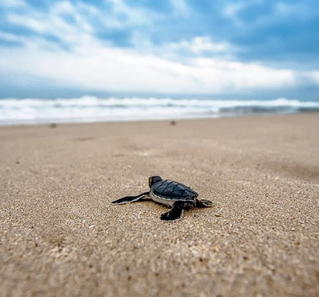
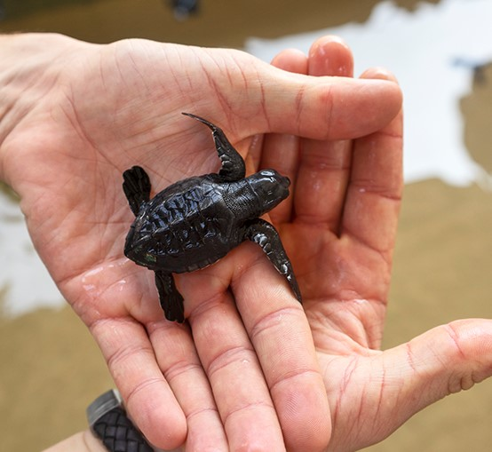

History of the hatchery
The Bentota turtle hatchery, which was established several decades ago along the breathtaking coastline of Bentota, Sri Lanka, has been a pioneer in turtle protection. The hatchery has been instrumental in preserving the Olive Ridley, Green, Hawksbill, and Loggerhead turtles' nesting and hatching areas because of its steadfast dedication to preserving endangered turtle species. The Bentota Turtle Hatchery has rescued several wounded turtles over the years, collected and incubated their eggs, and then released the hatchlings back into the ocean. As a result, it has become a symbol of hope. The hatchery's hard efforts have not only helped to boost turtle numbers but have also helped residents and tourists alike understand the value of conservation.

Turtle species in the hatchery
A wide variety of fascinating turtle species may be found at the Bentota Turtle Hatchery. The Olive Ridley turtles, who are renowned for their synchronised nesting behaviour and distinctive arribada mass nesting phenomena, may be seen by hatchery visitors. With their beautiful swimming and herbivorous diet, green turtles also find refuge here. You may also see the stunning Hawksbill turtles, known for their unique shell patterns and highly endangered status. The Bentota Turtle Hatchery is also home to Loggerhead turtles, which are recognised by their huge heads and strong jaws. At the hatchery, each of these exceptional species is given devoted attention and protection, helping to ensure their conservation and perpetuation for future generations.

Volunteer programs
The Bentota Turtle Hatchery's volunteer programmes provide a fantastic chance for people to directly support the protection of threatened turtle species. As a volunteer, you may take part in a variety of worthwhile activities that contribute significantly to the welfare and preservation of these wonderful animals. Your participation will make a real impact, whether it's helping with the treatment and care of wounded turtles, aiding with nest excavation and egg relocation, or supporting hatchling releases. Additionally, volunteers have the opportunity to lead beach clean-ups, inform tourists about turtle protection, and support neighbourhood outreach programmes. Joining the volunteer programmes at the Bentota Turtle Hatchery allows you to join a dedicated team that is dedicated to safeguarding this endangered animals. This practical experience equips you to actively contribute to the preservation of turtles and offers priceless insights into the difficulties they confront.